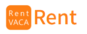
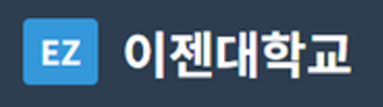
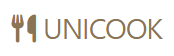

Introduction
안녕하세요.
저는 신입 백엔드 개발자
백세원입니다.
"매일 러닝으로 증명하는 꾸준함"
멈추지 않고 달리는 러너처럼, 멈추지 않고 학습하며 발전하는 개발자입니다.탄탄한 기본기와 강한 책임감으로 안정적인 시스템을 구축합니다.
현재 신입 백엔드 개발자로 구직 중입니다.
Overall Experiences
자바, 스프링(Spring), React기반 풀스택 개발자 양성과정
2025.04 ~ 2025.10
지능형 웹서비스 개발(with JAVA, Spring)
2025.10 ~ 2026.04
SkillSet
📱 Frontend
⚙️ Backend & Database

🛠️ Tools
🤖 AI & Data Analysis


Portfolio


Contact Me
- Phone : 010 - 9037 - 4782
- Email : bsw0329@gmail.com
- Github : https://github.com/SEWONBAEK